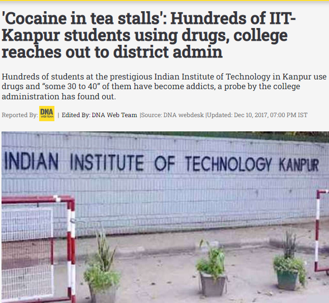
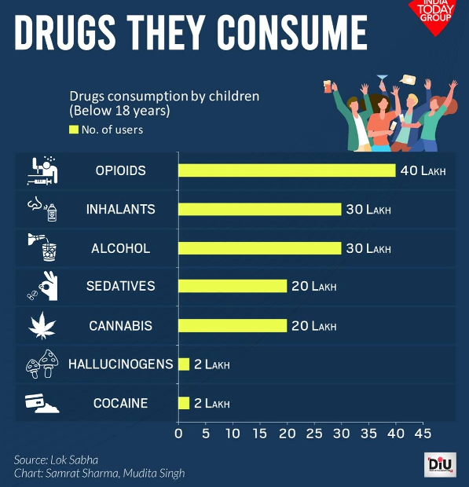

Drug Abuse among Indian Youth
Disclaimer: The views and the opinion expressed in this article are those of the author and does not necessarily reflect the views and positions of Public Policy and Opinion Cell IITK.
The first shocker of my college life was the widespread substance abuse among the student community. I witnessed it in the first few weeks of college. What was more shocking was how casually it was distributed,talked about and abused. Students abusing drugs wore it as a badge of honour and considered it to be a matter of pride. I thought that if this is the situation in one of the most premier institutes of our country, then what would be the situation in the other places. As I researched more about it, the more I was surprised. India despite being a youthful country is losing its youth to the vicious trap of substance abuse.

But what exactly is substance abuse?
It is the excessive use of a drug that is detrimental to self or society or both. Most
of the time, when a person enters this trap, they believe that they may leave
whenever they want,but they have no clue that the drugs are now controlling their
body and mind and leaving it becomes hard. The addicts look for something
which gives them a ‘kick’.
According to a study conducted by the National Commission for Protection of Child Rights, the most common form of substance abuse amongst adolescents is tobacco and alcohol, followed by inhalants and cannabis.According to a Matters India article, the adolescents are going to medical shops and buying cough syrup, surgical spirit, sleeping pills and other medicines meant for psychological patients and are abusing them. Besides, they also use after-shave lotion and nail polish. They buy Anacin and Saridon tablets, mix them with soft drinks like Coke and Fanta and drink it. Addicts have even found a way to get a ‘kick’ from condoms.
Data on the types of drugs they consume:

Then it brings us to the question: Why does one do drugs? The major reason is peer influence. A person while trying to fit in with the peer group gets trapped into the circle of drugs. Another important reason is the cutthroat competition which can lead one into depression and stress which leads them to drugs.
The unavailability of parents or any elderly influence to guide one can lead them this way.They rather feel better in the tension free illusion created by the drugs than bearing any tension due to their real lives.
The entertainment industry and its stars make abusing drugs seem attractive which leaves a strong impact on adolescent minds. Easy access to the drugs is also a factor.
Another major reason is ‘Curiosity’. Today’s youth likes to test whatever they see and hear of and in the case of drugs, they go on the way of addiction.
Now we examine: What are the effects of substance abuse?
For this I quote a piece of a blog from UDAYA,”The effect of substance abuse is
highest on the psychological health of adolescents with the possibility of
developing substance use disorder, leading to major behaviour changes
observed, including mood disorders, depression, anxiety, thought disorders such
as schizophrenia, as well as personality disorders like antisocial personality
traits. Nicotine changes the way synapses are formed, harming the parts that
control attention and learning.” It also weakens the body on a physiological level
to the extent of death.Such are the dangerous effects of substance abuse.
Solutions to stop this menace:
There needs to be a two pronged approach to this. The first approach must be regards to the prevention part. Regular parent monitoring and enhanced child-parent communication acts as a preventive measure. Strict enforcement of substance abuse policies can reduce one’s access to the drugs. Campaigns spreading awareness about the dangerous effects of substance abuse should be made more prevalent.The second approach to this should be the treatment of drug addicts. There must be a localised rehabilitation centre in every district of the country. Combination of medically assisted and behavorial therapies are greatly beneficial in the rehab process.
So at last I just want everyone to understand that it is not cool to do drugs and it not only destroys you but also your family.
This entry won the Third Position in Opinion Dias 2023.